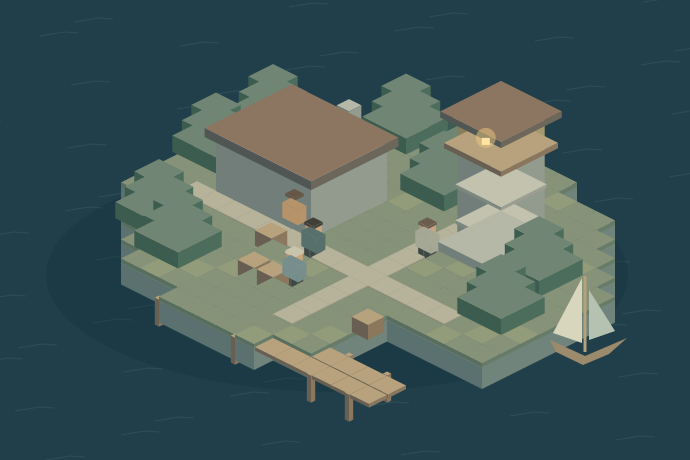

MINECRAFT NPC SYSTEM / 01 — СЕВЕРНАЯ ГАВАНЬ
У каждого здесь своя история.
Поговорите с жителями, верните свет в гавань.
Небольшое приключение о том, как персонажи помнят ваши действия.

Мара
Смотритель гавани
Ваш рюкзак
Ресурсы demoВ demo медь можно взять здесь. В Minecraft её нужно добыть.
ЖУРНАЛ ЗАДАНИЯ
Свет после шторма
Поговорите с Марой
- 01ОткликнутьсяМара · пристань
- 02Починить контактыЛев · медь 0 / 3
- 03Проверить сигналНика · фонарь
- 04Вернуться в гаваньМара · 1 изумруд
ЗА ПРЕДЕЛАМИ DEMO
Маленький мир.
Настоящая логика.
Это самостоятельный Java-плагин для Paper. Иллюстрация выше помогает пройти сценарий в браузере — подключение к Minecraft-серверу не требуется.
Скачать плагин JAR · 2.0.0Исходники, конфигурация и проверки ↗Правая кнопка мыши по NPC → выбор в чате. Действия проверяют роль и расстояние до персонажа.
Отдельное состояние для UUID каждого игрока. Запись на диск после каждого шага; повторная выдача награды заблокирована.
JAR в plugins/, перезапуск Paper, затем /harbor setup от администратора на ровной площадке. Плагин создаёт NPC, но не строит остров.
Проверки и границы проекта
Java-модель: 29 headless-проверок, включая сохранение и ошибку записи. Paper-адаптер проверяется на локальном сервере без графического клиента. Полный отчёт и команды запуска — в README.
Браузер — отдельная JavaScript-симуляция. Остров и портреты — авторская векторная иллюстрация, не скриншоты Minecraft. Три жителя и задание — вымышленный сценарий. Плагин предназначен для небольшого одиночного Paper-сервера; Folia не поддерживается. Запись прогресса и изменение Minecraft-инвентаря не образуют общую транзакцию при аварийном отключении.
Прочитать README ↗